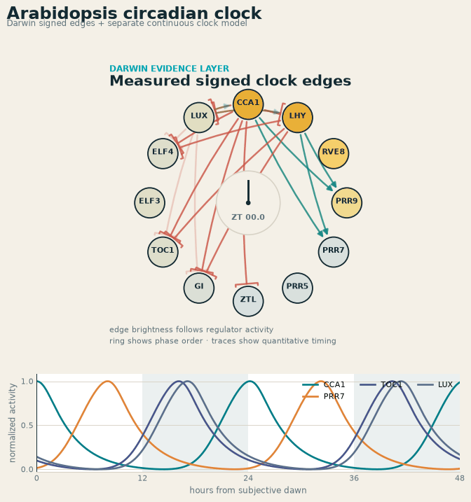
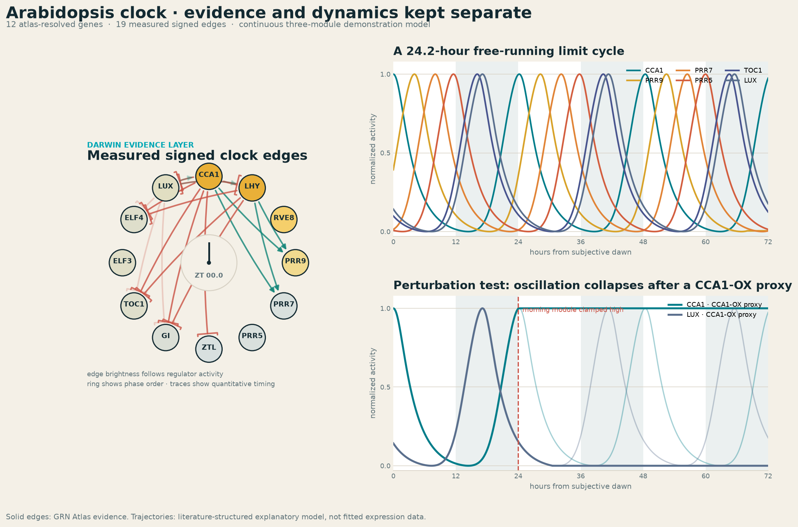

What Darwin contributes
Stable Arabidopsis identifiers, signed edge retrieval, confidence and provenance, plus a Boolean attractor result used as a comparison. The solid arrows in the animation come directly from the rebuilt GRN Atlas database.
Darwin identifies the Arabidopsis clock genes and retrieves the experimentally signed regulatory edges among them. A separate continuous model adds the delays and feedback needed to demonstrate a repeating circadian rhythm.

Stable Arabidopsis identifiers, signed edge retrieval, confidence and provenance, plus a Boolean attractor result used as a comparison. The solid arrows in the animation come directly from the rebuilt GRN Atlas database.
A compact morning–PRR–evening repressilator supplies continuous activity and delayed negative feedback. It is literature-structured and explanatory, not fitted expression data and not inferred from edge signs alone.

Download trajectories (CSV) · Inspect evidence and assumptions (JSON)